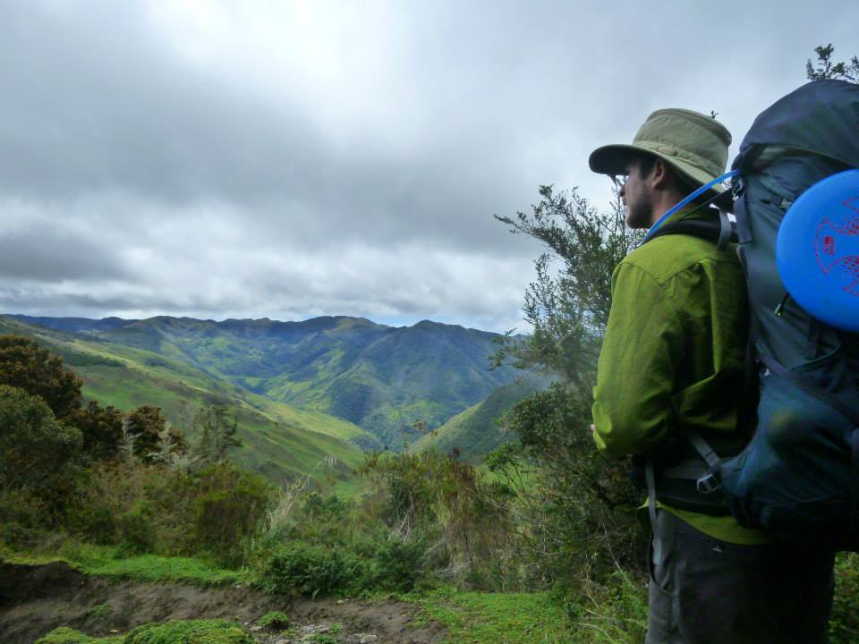

I am a Programme Specialist for Water Quality and Ecohydrology at UNESCO, based in Paris. I work on global water programmes in support of the Sustainable Development Goals.
My research interests include ecosystem ecology, watershed hydrology, wetlands, and the connections between water, nutrients, and biota. I am also interested in how environmental data can support resource management and public policy.

I was a research fellow at the University of Venice Ca’ Foscari through the iNEST programme, and worked with the RiverLy research unit at INRAE in Lyon, France. With Enrico Bertuzzo, I studied carbon budgets in river networks.
That work considered how much river carbon comes from the surrounding landscape versus stream and river metabolism, how it varies across space and time, and how river network structure affects carbon availability.
Before that, I worked as a research engineer at INRAE. I have a PhD in Ecohydrology from Virginia Tech and an MS in Ecohydrology from the University of Florida.